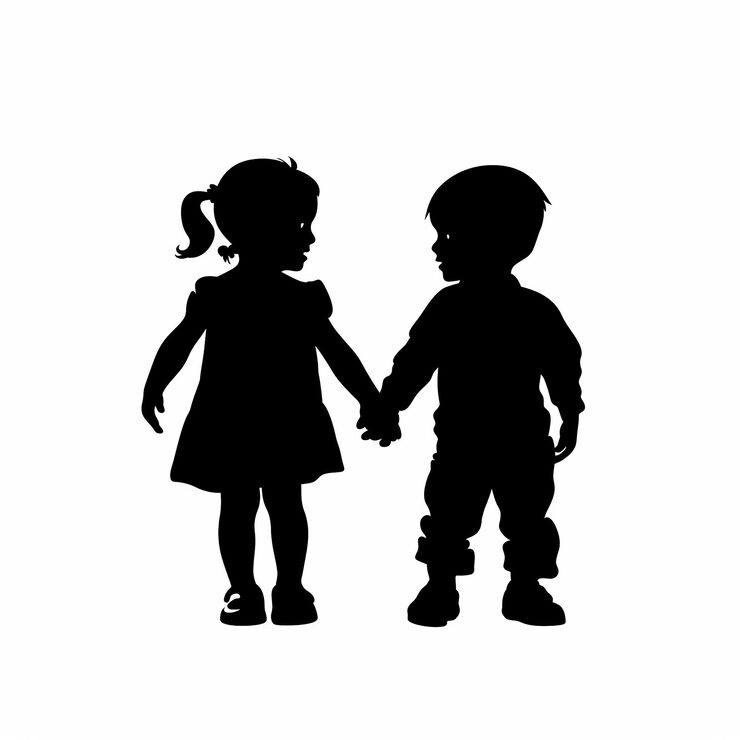
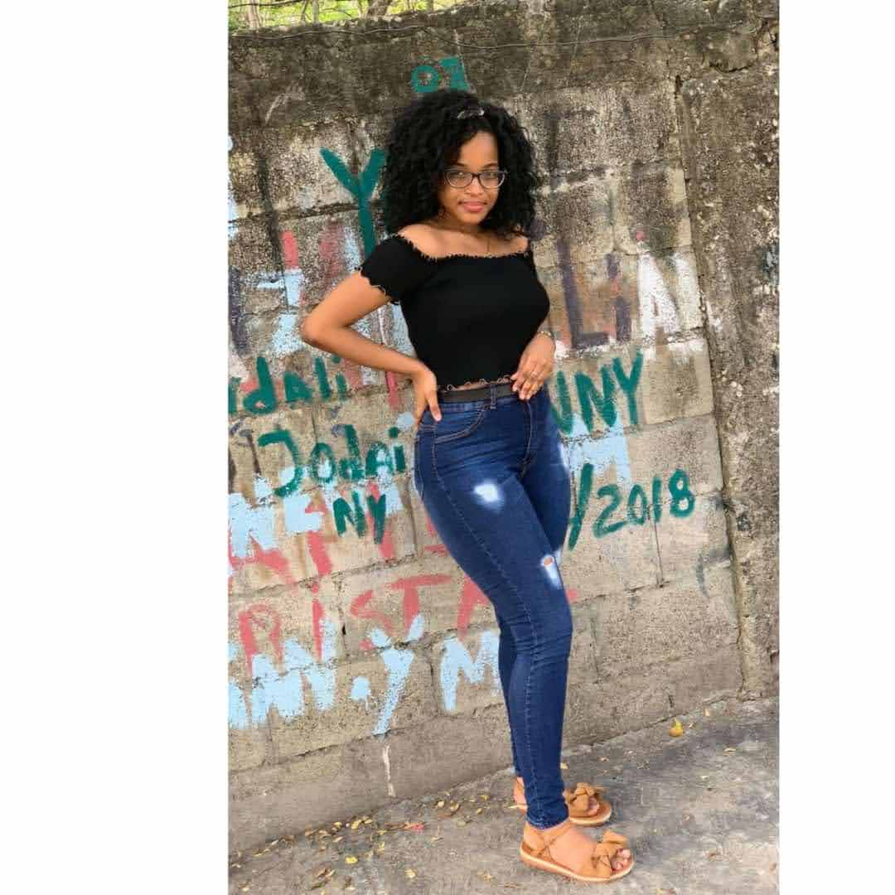
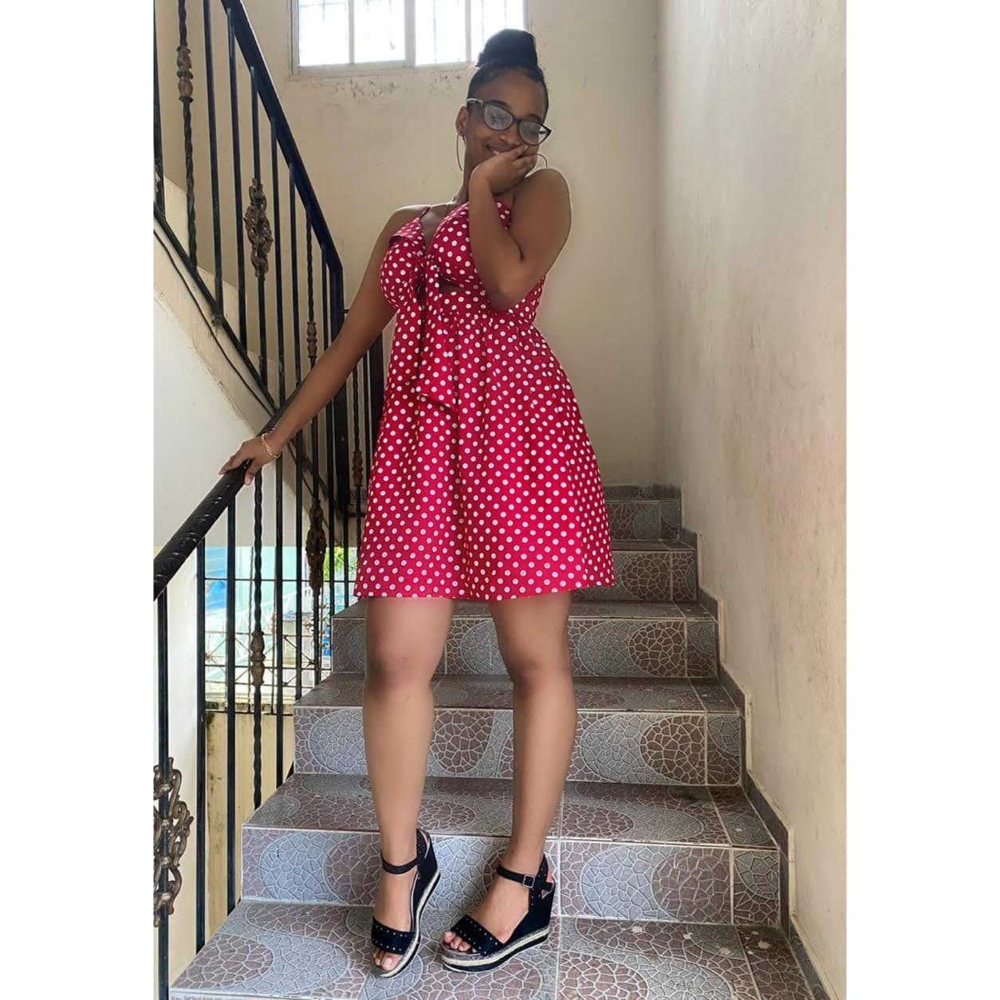
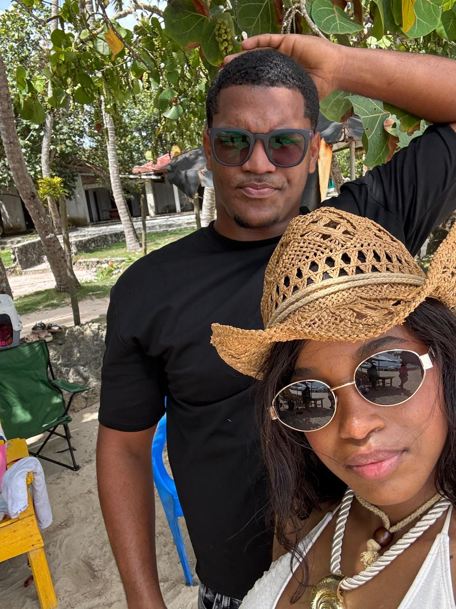
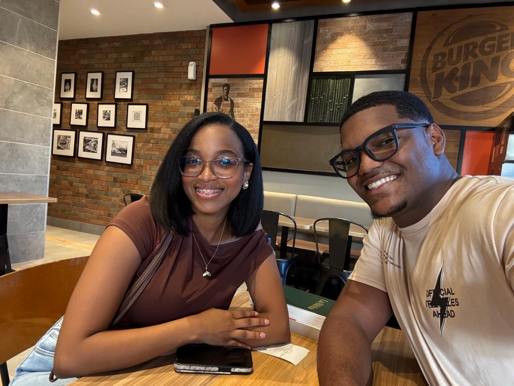

UNA HISTORIA QUE VOLVIÓ A ENCONTRARSE
24
19 años después...
Hay historias que el tiempo no consigue borrar. Esta es una de ellas.
HACE 19 AÑOS
La última vez

FOTO AQUÍHace 19 años todavía éramos pequeños. Compartíamos momentos sin imaginar que aquella etapa terminaría convirtiéndose en un recuerdo tan lejano.
No sabíamos que la vida nos llevaría por caminos diferentes ni que pasarían tantos años antes de volver a encontrarnos.
EL PASO DEL TIEMPO
Los años pasaron

FOTO AQUÍY los años comenzaron a pasar.
Cada uno fue creciendo, aprendiendo, viviendo nuevas experiencias y formando su propia historia.
Mientras tanto, aquellos recuerdos quedaron guardados en algún lugar del corazón.
DURANTE ESTOS AÑOS
Mientras tanto...

FOTO AQUÍHubo cumpleaños, cambios, momentos felices, momentos difíciles y muchas cosas que ninguno pudo compartir con el otro.
La vida siguió avanzando.
Pero que dos personas estén lejos no significa que una historia deje de existir.
19 AÑOS DESPUÉS
Y llegó el momento
Después de tantos años, ocurrió algo que durante mucho tiempo parecía lejano: volvimos a encontrarnos.
19 años después de aquella última etapa que compartimos, la vida nos volvió a poner frente a frente.
EL REENCUENTRO
Volver a verte

FOTO AQUÍVolver a verte después de 19 años fue una sensación difícil de explicar.
El tiempo había pasado, habíamos cambiado y habíamos vivido muchas cosas... pero había algo que seguía siendo familiar.
Como si el tiempo hubiera pasado, pero nuestra historia nunca hubiera desaparecido completamente.
EL PRESENTE
Hoy tienes 24
Y hoy estamos aquí.
Ya no somos aquellos niños de hace 19 años. Hoy eres una mujer de 24 años, con una historia propia, sueños, experiencias y muchísimo camino por delante.
Y qué bonito que esta vez pueda estar presente para celebrarlo contigo.
ANTES DE LLEGAR AL FINAL...
Después de 19 años...

FOTO AQUÍSi alguien me hubiera dicho hace 19 años que algún día volveríamos a encontrarnos y que tendría la oportunidad de celebrar contigo tus 24 años...
probablemente no lo habría imaginado.
Pero aquí estamos.
Y esta vez no quiero dejar pasar el momento sin decirte algo que quizás debí decir hace mucho tiempo.
Y AHORA...
¿Qué número tenía que salir?
Después de 19 años, hay un número que tiene que aparecer.EL PLATO FUERTE
Tengo algo que decirte...
Para ti, en tus 24 años ❤️
Querida hermana:
AQUÍ ESCRIBIRÉ MI CARTA.
Aquí colocaremos todo lo que realmente quiero decirte después de estos 19 años.
Gracias por formar parte de mi vida, por este reencuentro y por permitirme compartir contigo este momento tan especial.
Esta parte la vamos a personalizar completamente con mis propias palabras.
Con mucho cariño ❤️
FELICIDADES CARIÑO
FELICES 24 AÑOS
Que estos 24 años sean solamente el comienzo de todos los años que todavía nos quedan por compartir.
TE QUIERO MUCHO MANITA DISFRUTA TU DÍA ❤️